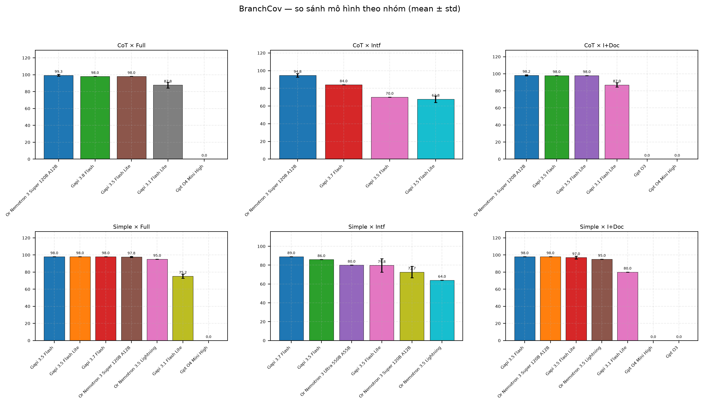
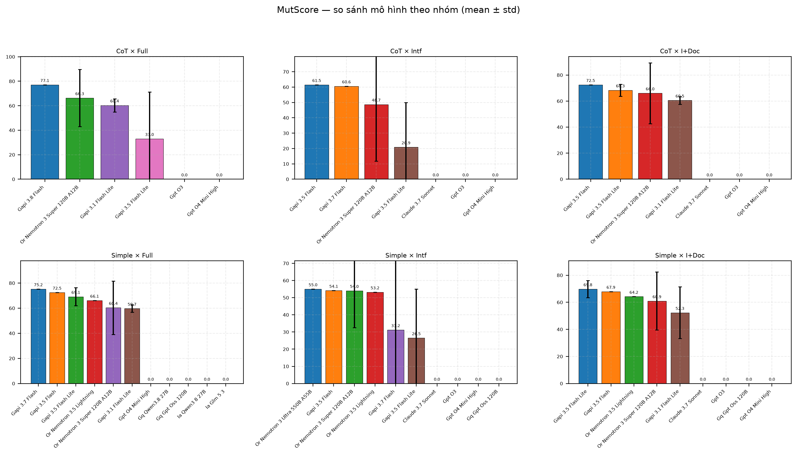
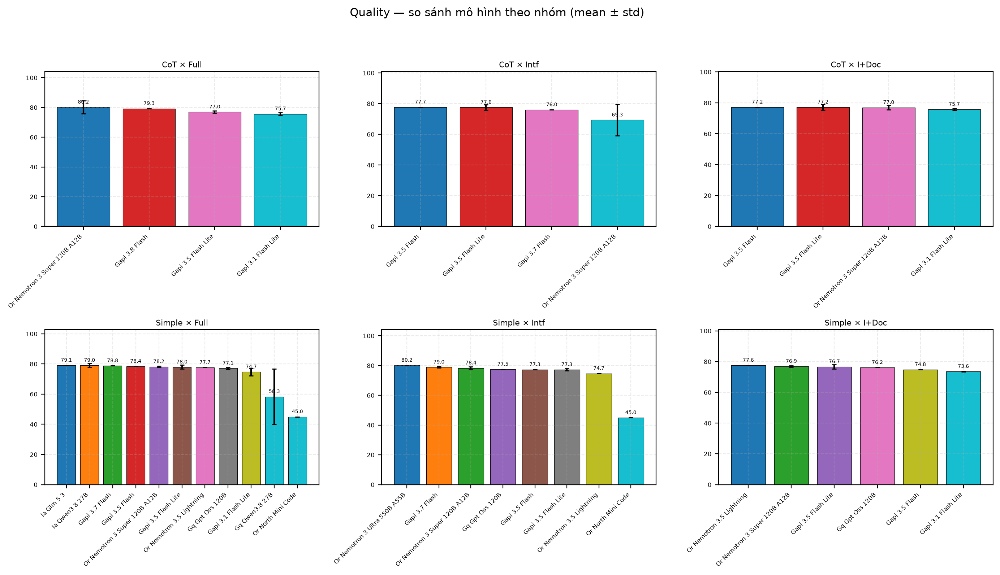
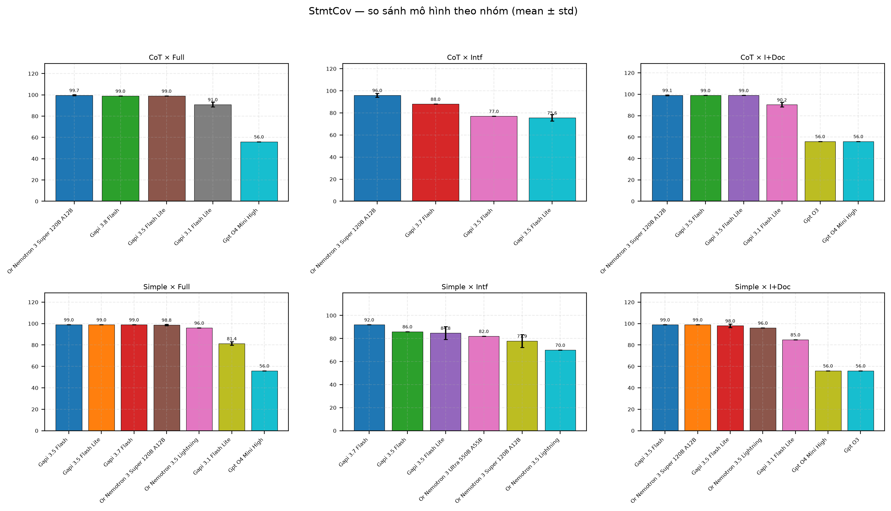
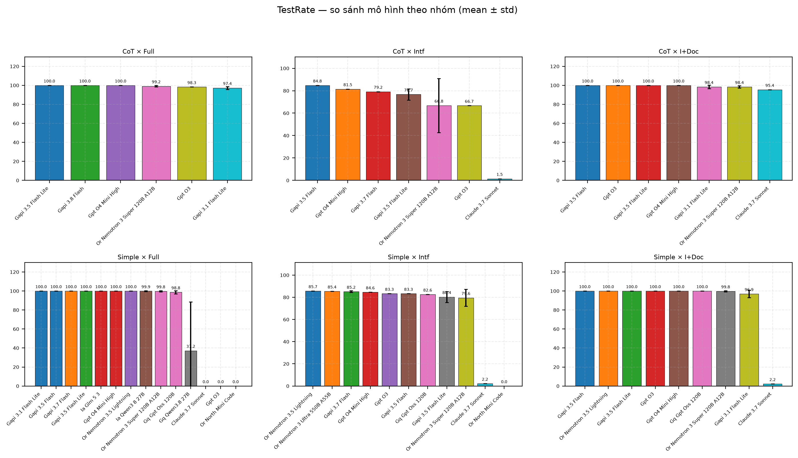
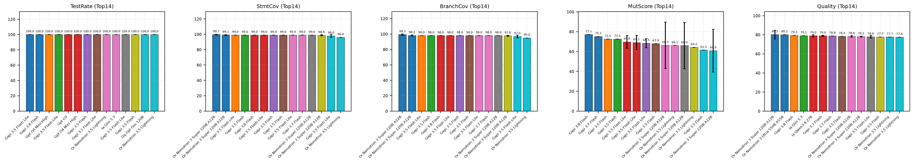
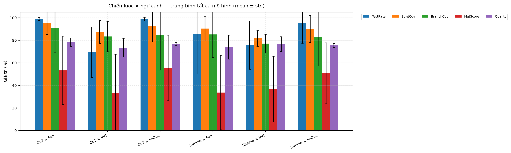
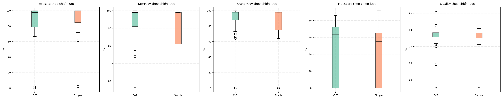

Nguồn dữ liệu: cli_results_v1/ và prompts_results/. Tất cả giá trị ở dạng trung bình ± độ lệch chuẩn (mean ± std).
| Strategy | Context | Model | N | Tỷ lệ test thành công | Độ phủ câu lệnh | Độ phủ nhánh | Điểm đột biến (mutation score) | Tỷ lệ biên dịch thành công | Thời gian phản hồi (s) | Số phương thức test | Tổng số khẳng định | Tỷ lệ phương thức được test | Điểm chất lượng tổng thể |
|---|---|---|---|---|---|---|---|---|---|---|---|---|---|
| Chain Of Thought Prompting | Full Context | gemini-api-3.1-flash-lite | 5 | 97.36 ± 1.51 % | 91.00 ± 2.35 % | 87.80 ± 3.42 % | 60.36 ± 5.38 % | 100.00 ± 0.00 % | 29.77 ± 13.31 s | 30.40 ± 2.70 test | 21.80 ± 4.21 assert | 100.00 ± 0.00 % | 75.70 ± 0.89 % |
| Chain Of Thought Prompting | Full Context | gemini-api-3.5-flash-lite | 4 | 100.00 ± 0.00 % | 99.00 ± 0.00 % | 98.00 ± 0.00 % | 33.02 ± 38.16 % | 100.00 ± 0.00 % | 18.75 ± 1.76 s | 35.00 ± 3.83 test | 29.25 ± 3.40 assert | 100.00 ± 0.00 % | 77.00 ± 0.70 % |
| Chain Of Thought Prompting | Full Context | gemini-api-3.8-flash | 1 | 100.00 ± 0.00 % | 99.00 ± 0.00 % | 98.00 ± 0.00 % | 77.10 ± 0.00 % | 100.00 ± 0.00 % | 93.35 ± 0.00 s | 71.00 ± 0.00 test | 52.00 ± 0.00 assert | 100.00 ± 0.00 % | 79.30 ± 0.00 % |
| Chain Of Thought Prompting | Full Context | gpt-o3 | 1 | 98.30 ± 0.00 % | – | – | 0.00 ± 0.00 % | 100.00 ± 0.00 % | 137.94 ± 0.00 s | 60.00 ± 0.00 test | 60.00 ± 0.00 assert | – | – |
| Chain Of Thought Prompting | Full Context | gpt-o4-mini-high | 1 | 100.00 ± 0.00 % | 56.00 ± 0.00 % | 0.00 ± 0.00 % | 0.00 ± 0.00 % | 100.00 ± 0.00 % | 116.03 ± 0.00 s | 57.00 ± 0.00 test | 69.00 ± 0.00 assert | – | – |
| Chain Of Thought Prompting | Full Context | openrouter-nemotron-3-super-120b-a12b | 10 | 99.17 ± 0.82 % | 99.67 ± 0.50 % | 99.33 ± 1.00 % | 66.33 ± 23.34 % | 100.00 ± 0.00 % | 394.32 ± 156.00 s | 89.60 ± 13.59 test | 80.10 ± 19.83 assert | 100.00 ± 0.00 % | 80.24 ± 4.38 % |
| Chain Of Thought Prompting | Interface | claude-3.7-sonnet | 1 | 1.50 ± 0.00 % | – | – | 0.00 ± 0.00 % | 100.00 ± 0.00 % | 147.46 ± 0.00 s | 65.00 ± 0.00 test | 87.00 ± 0.00 assert | – | – |
| Chain Of Thought Prompting | Interface | gemini-api-3.5-flash | 1 | 84.80 ± 0.00 % | 77.00 ± 0.00 % | 70.00 ± 0.00 % | 61.50 ± 0.00 % | 100.00 ± 0.00 % | 50.91 ± 0.00 s | 33.00 ± 0.00 test | 34.00 ± 0.00 assert | 100.00 ± 0.00 % | 77.70 ± 0.00 % |
| Chain Of Thought Prompting | Interface | gemini-api-3.5-flash-lite | 8 | 76.70 ± 5.00 % | 75.60 ± 2.88 % | 67.80 ± 3.63 % | 20.88 ± 29.13 % | 100.00 ± 0.00 % | 109.03 ± 158.76 s | 28.38 ± 5.34 test | 38.62 ± 3.62 assert | 100.00 ± 0.00 % | 77.56 ± 1.84 % |
| Chain Of Thought Prompting | Interface | gemini-api-3.7-flash | 1 | 79.20 ± 0.00 % | 88.00 ± 0.00 % | 84.00 ± 0.00 % | 60.60 ± 0.00 % | 100.00 ± 0.00 % | 874.42 ± 0.00 s | 48.00 ± 0.00 test | 46.00 ± 0.00 assert | 100.00 ± 0.00 % | 76.00 ± 0.00 % |
| Chain Of Thought Prompting | Interface | gpt-o3 | 1 | 66.70 ± 0.00 % | – | – | 0.00 ± 0.00 % | 100.00 ± 0.00 % | 110.58 ± 0.00 s | 45.00 ± 0.00 test | 49.00 ± 0.00 assert | – | – |
| Chain Of Thought Prompting | Interface | gpt-o4-mini-high | 1 | 81.50 ± 0.00 % | – | – | 0.00 ± 0.00 % | 100.00 ± 0.00 % | 112.75 ± 0.00 s | 65.00 ± 0.00 test | 100.00 ± 0.00 assert | – | – |
| Chain Of Thought Prompting | Interface | openrouter-nemotron-3-super-120b-a12b | 10 | 66.85 ± 24.08 % | 96.00 ± 1.69 % | 94.75 ± 2.05 % | 48.72 ± 36.98 % | 90.00 ± 31.62 % | 406.93 ± 161.37 s | 98.30 ± 14.79 test | 102.00 ± 39.10 assert | 100.00 ± 0.00 % | 69.32 ± 10.21 % |
| Chain Of Thought Prompting | Interface Docstring | claude-3.7-sonnet | 1 | 95.40 ± 0.00 % | – | – | 0.00 ± 0.00 % | 100.00 ± 0.00 % | 143.05 ± 0.00 s | 65.00 ± 0.00 test | 82.00 ± 0.00 assert | – | – |
| Chain Of Thought Prompting | Interface Docstring | gemini-api-3.1-flash-lite | 4 | 98.42 ± 1.82 % | 90.25 ± 2.06 % | 87.00 ± 2.45 % | 60.55 ± 2.90 % | 100.00 ± 0.00 % | 28.16 ± 13.24 s | 32.25 ± 2.87 test | 19.00 ± 2.94 assert | 100.00 ± 0.00 % | 75.72 ± 0.63 % |
| Chain Of Thought Prompting | Interface Docstring | gemini-api-3.5-flash | 1 | 100.00 ± 0.00 % | 99.00 ± 0.00 % | 98.00 ± 0.00 % | 72.50 ± 0.00 % | 100.00 ± 0.00 % | 61.22 ± 0.00 s | 56.00 ± 0.00 test | 43.00 ± 0.00 assert | 100.00 ± 0.00 % | 77.20 ± 0.00 % |
| Chain Of Thought Prompting | Interface Docstring | gemini-api-3.5-flash-lite | 2 | 100.00 ± 0.00 % | 99.00 ± 0.00 % | 98.00 ± 0.00 % | 68.35 ± 4.60 % | 100.00 ± 0.00 % | 15.80 ± 0.36 s | 39.00 ± 0.00 test | 34.00 ± 7.07 assert | 100.00 ± 0.00 % | 77.20 ± 1.84 % |
| Chain Of Thought Prompting | Interface Docstring | gpt-o3 | 1 | 100.00 ± 0.00 % | 56.00 ± 0.00 % | 0.00 ± 0.00 % | 0.00 ± 0.00 % | 100.00 ± 0.00 % | 136.25 ± 0.00 s | 59.00 ± 0.00 test | 65.00 ± 0.00 assert | – | – |
| Chain Of Thought Prompting | Interface Docstring | gpt-o4-mini-high | 1 | 100.00 ± 0.00 % | 56.00 ± 0.00 % | 0.00 ± 0.00 % | 0.00 ± 0.00 % | 100.00 ± 0.00 % | 85.25 ± 0.00 s | 56.00 ± 0.00 test | 69.00 ± 0.00 assert | – | – |
| Chain Of Thought Prompting | Interface Docstring | openrouter-nemotron-3-super-120b-a12b | 10 | 98.41 ± 1.25 % | 99.11 ± 0.33 % | 98.22 ± 0.67 % | 66.05 ± 23.32 % | 100.00 ± 0.00 % | 368.91 ± 213.55 s | 91.60 ± 8.91 test | 78.70 ± 12.26 assert | 100.00 ± 0.00 % | 76.97 ± 1.45 % |
| Simple Prompting | Full Context | claude-3.7-sonnet | 1 | 0.00 ± 0.00 % | – | – | – | 0.00 ± 0.00 % | 45.47 ± 0.00 s | 47.00 ± 0.00 test | 67.00 ± 0.00 assert | – | – |
| Simple Prompting | Full Context | gemini-api-3.1-flash-lite | 10 | 100.00 ± 0.00 % | 81.40 ± 1.65 % | 75.20 ± 2.39 % | 59.66 ± 2.97 % | 100.00 ± 0.00 % | 10.40 ± 7.03 s | 13.30 ± 2.50 test | 11.40 ± 0.97 assert | 100.00 ± 0.00 % | 74.71 ± 2.58 % |
| Simple Prompting | Full Context | gemini-api-3.5-flash | 1 | 100.00 ± 0.00 % | 99.00 ± 0.00 % | 98.00 ± 0.00 % | 72.50 ± 0.00 % | 100.00 ± 0.00 % | 23.96 ± 0.00 s | 55.00 ± 0.00 test | 33.00 ± 0.00 assert | 100.00 ± 0.00 % | 78.40 ± 0.00 % |
| Simple Prompting | Full Context | gemini-api-3.5-flash-lite | 3 | 100.00 ± 0.00 % | 99.00 ± 0.00 % | 98.00 ± 0.00 % | 69.13 ± 7.14 % | 100.00 ± 0.00 % | 52.48 ± 73.52 s | 39.00 ± 10.39 test | 31.00 ± 2.00 assert | 100.00 ± 0.00 % | 77.97 ± 1.36 % |
| Simple Prompting | Full Context | gemini-api-3.7-flash | 1 | 100.00 ± 0.00 % | 99.00 ± 0.00 % | 98.00 ± 0.00 % | 75.20 ± 0.00 % | 100.00 ± 0.00 % | 147.97 ± 0.00 s | 57.00 ± 0.00 test | 38.00 ± 0.00 assert | 100.00 ± 0.00 % | 78.80 ± 0.00 % |
| Simple Prompting | Full Context | gpt-o3 | 1 | 0.00 ± 0.00 % | – | – | – | 0.00 ± 0.00 % | 71.54 ± 0.00 s | 10.00 ± 0.00 test | 10.00 ± 0.00 assert | – | – |
| Simple Prompting | Full Context | gpt-o4-mini-high | 1 | 100.00 ± 0.00 % | 56.00 ± 0.00 % | 0.00 ± 0.00 % | 0.00 ± 0.00 % | 100.00 ± 0.00 % | 38.67 ± 0.00 s | 45.00 ± 0.00 test | 55.00 ± 0.00 assert | – | – |
| Simple Prompting | Full Context | groq-gpt-oss-120b | 7 | 98.76 ± 1.68 % | – | – | 0.00 ± 0.00 % | 100.00 ± 0.00 % | 5.47 ± 0.25 s | 43.71 ± 3.55 test | 25.57 ± 3.36 assert | 100.00 ± 0.00 % | 77.11 ± 0.60 % |
| Simple Prompting | Full Context | groq-qwen3.8-27b | 8 | 37.24 ± 51.40 % | – | – | 0.00 ± 0.00 % | 37.50 ± 51.76 % | 4.52 ± 0.05 s | 47.88 ± 0.99 test | 10.88 ± 15.02 assert | 62.50 ± 4.49 % | 58.33 ± 18.39 % |
| Simple Prompting | Full Context | intern-ai-glm-5-3 | 1 | 100.00 ± 0.00 % | – | – | 0.00 ± 0.00 % | 100.00 ± 0.00 % | 180.10 ± 0.00 s | 81.00 ± 0.00 test | 63.00 ± 0.00 assert | 100.00 ± 0.00 % | 79.10 ± 0.00 % |
| Simple Prompting | Full Context | intern-ai-qwen3-8-27b | 10 | 99.89 ± 0.35 % | – | – | 0.00 ± 0.00 % | 100.00 ± 0.00 % | 111.61 ± 28.63 s | 110.80 ± 16.62 test | 71.70 ± 10.52 assert | 100.00 ± 0.00 % | 79.04 ± 1.18 % |
| Simple Prompting | Full Context | openrouter-nemotron-3-super-120b-a12b | 10 | 99.80 ± 0.63 % | 98.78 ± 0.67 % | 97.78 ± 0.67 % | 60.37 ± 21.25 % | 100.00 ± 0.00 % | 82.29 ± 30.52 s | 48.10 ± 4.04 test | 33.10 ± 3.11 assert | 100.00 ± 0.00 % | 78.18 ± 0.52 % |
| Simple Prompting | Full Context | openrouter-nemotron-3.5-lightning | 1 | 100.00 ± 0.00 % | 96.00 ± 0.00 % | 95.00 ± 0.00 % | 66.10 ± 0.00 % | 100.00 ± 0.00 % | 79.77 ± 0.00 s | 46.00 ± 0.00 test | 27.00 ± 0.00 assert | 100.00 ± 0.00 % | 77.70 ± 0.00 % |
| Simple Prompting | Full Context | openrouter-north-mini-code | 1 | 0.00 ± 0.00 % | – | – | – | 0.00 ± 0.00 % | 53.60 ± 0.00 s | 10.00 ± 0.00 test | 0.00 ± 0.00 assert | 16.70 ± 0.00 % | 45.00 ± 0.00 % |
| Simple Prompting | Interface | claude-3.7-sonnet | 1 | 2.20 ± 0.00 % | – | – | 0.00 ± 0.00 % | 100.00 ± 0.00 % | 45.87 ± 0.00 s | 45.00 ± 0.00 test | 58.00 ± 0.00 assert | – | – |
| Simple Prompting | Interface | gemini-api-3.5-flash | 1 | 83.30 ± 0.00 % | 86.00 ± 0.00 % | 86.00 ± 0.00 % | 54.10 ± 0.00 % | 100.00 ± 0.00 % | 27.43 ± 0.00 s | 42.00 ± 0.00 test | 33.00 ± 0.00 assert | 100.00 ± 0.00 % | 77.30 ± 0.00 % |
| Simple Prompting | Interface | gemini-api-3.5-flash-lite | 8 | 80.38 ± 4.95 % | 84.75 ± 5.47 % | 79.75 ± 7.21 % | 26.49 ± 28.45 % | 100.00 ± 0.00 % | 44.40 ± 50.07 s | 40.00 ± 5.34 test | 37.00 ± 1.69 assert | 100.00 ± 0.00 % | 77.28 ± 0.82 % |
| Simple Prompting | Interface | gemini-api-3.7-flash | 2 | 85.15 ± 0.78 % | 92.00 ± 0.00 % | 89.00 ± 0.00 % | 31.20 ± 44.12 % | 100.00 ± 0.00 % | 235.27 ± 18.99 s | 50.50 ± 2.12 test | 40.00 ± 2.83 assert | 100.00 ± 0.00 % | 78.95 ± 0.49 % |
| Simple Prompting | Interface | gpt-o3 | 1 | 83.30 ± 0.00 % | – | – | 0.00 ± 0.00 % | 100.00 ± 0.00 % | 40.92 ± 0.00 s | 24.00 ± 0.00 test | 26.00 ± 0.00 assert | – | – |
| Simple Prompting | Interface | gpt-o4-mini-high | 1 | 84.60 ± 0.00 % | – | – | 0.00 ± 0.00 % | 100.00 ± 0.00 % | 19.92 ± 0.00 s | 26.00 ± 0.00 test | 27.00 ± 0.00 assert | – | – |
| Simple Prompting | Interface | groq-gpt-oss-120b | 1 | 82.60 ± 0.00 % | – | – | 0.00 ± 0.00 % | 100.00 ± 0.00 % | 3.28 ± 0.00 s | 23.00 ± 0.00 test | 18.00 ± 0.00 assert | 100.00 ± 0.00 % | 77.50 ± 0.00 % |
| Simple Prompting | Interface | openrouter-nemotron-3-super-120b-a12b | 11 | 79.57 ± 7.64 % | 77.90 ± 5.63 % | 72.70 ± 6.15 % | 54.05 ± 21.49 % | 100.00 ± 0.00 % | 92.57 ± 74.18 s | 32.27 ± 5.31 test | 35.73 ± 6.00 assert | 100.00 ± 0.00 % | 78.38 ± 0.95 % |
| Simple Prompting | Interface | openrouter-nemotron-3-ultra-550b-a55b | 1 | 85.40 ± 0.00 % | 82.00 ± 0.00 % | 80.00 ± 0.00 % | 55.00 ± 0.00 % | 100.00 ± 0.00 % | 141.45 ± 0.00 s | 41.00 ± 0.00 test | 39.00 ± 0.00 assert | 100.00 ± 0.00 % | 80.20 ± 0.00 % |
| Simple Prompting | Interface | openrouter-nemotron-3.5-lightning | 1 | 85.70 ± 0.00 % | 70.00 ± 0.00 % | 64.00 ± 0.00 % | 53.20 ± 0.00 % | 100.00 ± 0.00 % | 172.21 ± 0.00 s | 28.00 ± 0.00 test | 27.00 ± 0.00 assert | 100.00 ± 0.00 % | 74.70 ± 0.00 % |
| Simple Prompting | Interface | openrouter-north-mini-code | 1 | 0.00 ± 0.00 % | – | – | – | 0.00 ± 0.00 % | 59.61 ± 0.00 s | 15.00 ± 0.00 test | 0.00 ± 0.00 assert | 83.30 ± 0.00 % | 45.00 ± 0.00 % |
| Simple Prompting | Interface Docstring | claude-3.7-sonnet | 1 | 2.20 ± 0.00 % | – | – | 0.00 ± 0.00 % | 100.00 ± 0.00 % | 67.51 ± 0.00 s | 45.00 ± 0.00 test | 73.00 ± 0.00 assert | – | – |
| Simple Prompting | Interface Docstring | gemini-api-3.1-flash-lite | 10 | 96.92 ± 3.98 % | 85.00 ± 0.00 % | 80.00 ± 0.00 % | 52.31 ± 19.13 % | 100.00 ± 0.00 % | 8.07 ± 8.75 s | 13.00 ± 0.00 test | 15.40 ± 0.52 assert | 100.00 ± 0.00 % | 73.62 ± 0.17 % |
| Simple Prompting | Interface Docstring | gemini-api-3.5-flash | 1 | 100.00 ± 0.00 % | 99.00 ± 0.00 % | 98.00 ± 0.00 % | 67.90 ± 0.00 % | 100.00 ± 0.00 % | 29.29 ± 0.00 s | 57.00 ± 0.00 test | 28.00 ± 0.00 assert | 100.00 ± 0.00 % | 74.80 ± 0.00 % |
| Simple Prompting | Interface Docstring | gemini-api-3.5-flash-lite | 3 | 100.00 ± 0.00 % | 98.00 ± 1.73 % | 97.00 ± 1.73 % | 69.77 ± 6.35 % | 100.00 ± 0.00 % | 23.96 ± 30.09 s | 47.33 ± 7.09 test | 30.00 ± 3.00 assert | 100.00 ± 0.00 % | 76.70 ± 1.44 % |
| Simple Prompting | Interface Docstring | gpt-o3 | 1 | 100.00 ± 0.00 % | 56.00 ± 0.00 % | 0.00 ± 0.00 % | 0.00 ± 0.00 % | 100.00 ± 0.00 % | 34.96 ± 0.00 s | 36.00 ± 0.00 test | 39.00 ± 0.00 assert | – | – |
| Simple Prompting | Interface Docstring | gpt-o4-mini-high | 1 | 100.00 ± 0.00 % | 56.00 ± 0.00 % | 0.00 ± 0.00 % | 0.00 ± 0.00 % | 100.00 ± 0.00 % | 29.19 ± 0.00 s | 46.00 ± 0.00 test | 46.00 ± 0.00 assert | – | – |
| Simple Prompting | Interface Docstring | groq-gpt-oss-120b | 1 | 100.00 ± 0.00 % | – | – | 0.00 ± 0.00 % | 100.00 ± 0.00 % | 5.85 ± 0.00 s | 42.00 ± 0.00 test | 25.00 ± 0.00 assert | 100.00 ± 0.00 % | 76.20 ± 0.00 % |
| Simple Prompting | Interface Docstring | openrouter-nemotron-3-super-120b-a12b | 10 | 99.80 ± 0.63 % | 99.00 ± 0.00 % | 98.00 ± 0.00 % | 60.93 ± 21.44 % | 100.00 ± 0.00 % | 80.35 ± 37.28 s | 43.60 ± 5.99 test | 32.00 ± 3.68 assert | 100.00 ± 0.00 % | 76.94 ± 0.40 % |
| Simple Prompting | Interface Docstring | openrouter-nemotron-3.5-lightning | 1 | 100.00 ± 0.00 % | 96.00 ± 0.00 % | 95.00 ± 0.00 % | 64.20 ± 0.00 % | 100.00 ± 0.00 % | 125.10 ± 0.00 s | 46.00 ± 0.00 test | 26.00 ± 0.00 assert | 100.00 ± 0.00 % | 77.60 ± 0.00 % |
| Chain Of Thought Prompting | Full Context | TRUNG BÌNH TẤT CẢ MÔ HÌNH | 22 | 98.94 ± 1.30 % | 95.15 ± 10.00 % | 91.15 ± 22.07 % | 53.38 ± 30.26 % | 100.00 ± 0.00 % | 205.20 ± 206.48 s | 62.55 ± 28.76 test | 54.91 ± 29.55 assert | 100.00 ± 0.00 % | 78.41 ± 3.67 % |
| Chain Of Thought Prompting | Interface | TRUNG BÌNH TẤT CẢ MÔ HÌNH | 23 | 69.38 ± 22.34 % | 87.40 ± 10.18 % | 83.40 ± 13.39 % | 33.07 ± 34.59 % | 95.65 ± 20.85 % | 271.20 ± 241.59 s | 63.74 ± 34.16 test | 71.52 ± 40.12 assert | 100.00 ± 0.00 % | 73.37 ± 8.25 % |
| Chain Of Thought Prompting | Interface Docstring | TRUNG BÌNH TẤT CẢ MÔ HÌNH | 20 | 98.66 ± 1.53 % | 92.33 ± 13.76 % | 84.78 ± 31.22 % | 55.59 ± 29.03 % | 100.00 ± 0.00 % | 212.96 ± 219.88 s | 67.95 ± 26.64 test | 59.50 ± 27.02 assert | 100.00 ± 0.00 % | 76.72 ± 1.34 % |
| Simple Prompting | Full Context | TRUNG BÌNH TẤT CẢ MÔ HÌNH | 56 | 85.47 ± 35.22 % | 90.39 ± 11.05 % | 85.27 ± 20.64 % | 33.78 ± 32.98 % | 85.71 ± 35.31 % | 52.07 ± 52.22 s | 51.41 ± 32.56 test | 32.39 ± 23.70 assert | 92.77 ± 17.30 % | 73.94 ± 10.64 % |
| Simple Prompting | Interface | TRUNG BÌNH TẤT CẢ MÔ HÌNH | 29 | 75.71 ± 21.42 % | 81.70 ± 7.01 % | 77.09 ± 8.25 % | 36.83 ± 29.02 % | 96.55 ± 18.57 % | 81.19 ± 75.74 s | 35.17 ± 8.92 test | 34.38 ± 9.89 assert | 99.36 ± 3.27 % | 76.65 ± 6.57 % |
| Simple Prompting | Interface Docstring | TRUNG BÌNH TẤT CẢ MÔ HÌNH | 29 | 95.50 ± 18.14 % | 90.08 ± 12.01 % | 83.31 ± 25.96 % | 50.82 ± 27.01 % | 100.00 ± 0.00 % | 43.03 ± 42.85 s | 33.79 ± 16.14 test | 27.62 ± 12.51 assert | 100.00 ± 0.00 % | 75.55 ± 1.69 % |
Cột "N" là số lần chạy được tổng hợp. "TRUNG BÌNH TẤT CẢ MÔ HÌNH" là tổng hợp theo (strategy, context) toàn bộ mô hình.
| Chỉ số (tỷ lệ %) | Xuất sắc | Tốt | Khá | Yếu |
|---|---|---|---|---|
| Độ phủ / Chất lượng / Thành công | ≥ 90 | 80–89 | 70–79 | < 70 |
| Độ phủ nhánh (branch coverage) | ≥ 80 | 60–79 | 40–59 | < 40 |
| Điểm đột biến (mutation score) | ≥ 50 | 30–49 | 15–29 | < 15 |
| Thời gian phản hồi | < 30s | 30–60s | 60–120s | > 120s |

grid_branch_coverage

grid_mutation_score

grid_overall_quality_score

grid_statement_coverage

grid_test_success_rate

grid_top14

grouped_strategy_context

grid_boxplot
aggregation_output/aggregated_raw.csv — dữ liệu thô từng lần chạyaggregation_output/summary_by_model.csv — mean ± std theo (strategy, context, model)aggregation_output/summary_by_strategy_context.csv — mean ± std theo (strategy, context)aggregation_output/tables/latex_table.tex — bảng LaTeX chèn trực tiếp vào paperaggregation_output/tables/markdown_table.md — bảng Markdownaggregation_output/charts/ — tất cả biểu đồ PNG